2023 – 2024 · Microsoft Priva
2023 – 2024 · Microsoft Priva
Microsoft Priva · Security Copilot · IAPP Global Summit 2024
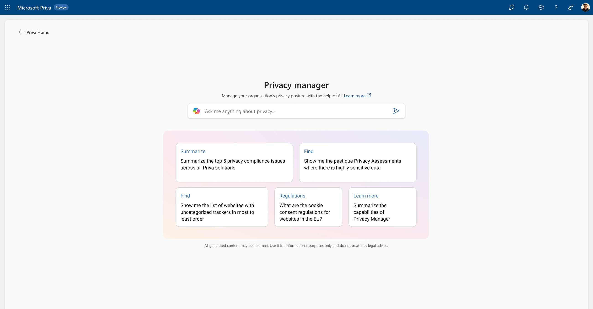
The Problem
Microsoft Priva is a suite of five privacy products — subject rights requests, consent management, privacy risk management, assessments, and tracker scanning — that together cover an organisation's privacy compliance workflow (see the Priva case study for the full picture). Privacy officers working across that suite faced a consistent challenge: the tools existed, but navigating across five distinct products to answer a single compliance question was slow and cognitively demanding. Understanding consent requirements across jurisdictions, initiating a data subject request, and reviewing risk patterns required expert knowledge of where everything lived.
With generative AI maturing rapidly inside Microsoft, the question became: what does it look like when an AI assistant orchestrates privacy operations — not just answers questions?
My Role
I co-designed this project with another interaction designer. My specific ownership was the core interaction model — the rules governing how the AI surfaces suggestions, how users maintain control over AI-generated content, and how the assistant transitions fluidly between conversational responses and native product UI. I also led the Figma prototype that was used in the live IAPP demo and drove the iteration sessions with senior leadership in the lead-up to the conference.
Design Explorations
Underlying every pattern explored here were two constraints. First, AI suggestions needed to be attributable, editable, and interruptible, or privacy officers wouldn't trust the system with real compliance decisions. Second, a principle we held to throughout: don't recreate UI inside Copilot itself — leverage the product's existing UI, and don't make users re-learn flows they already know. Neither got its own separate design track; both shaped how the patterns below actually work.
Smart wizard automation. Multi-step wizards — like creating a consent model — were a prime target for AI compression. Rather than the user filling 11+ fields manually, Copilot could surface a relevant next step directly inside a conversation — answering a regulatory question and then proposing "Create a consent model for my website in California" as a suggested action — or the user could ask for it directly. Either path opened a wizard pre-populated with Copilot's suggestions, each one editable and clearly labeled as a suggestion rather than a locked answer, down to the layout step, where Copilot's recommended option came with its reasoning shown inline (e.g. "Supports CA 'Do Not Sell' requirement"). A task that previously took manual research and form-filling was reduced to a review-and-confirm.
Magic Spotlight. The vision was to let a user click into any artifact they had a question about — not just a chart — and ask Copilot directly. That vision shipped largely as designed: once a user's Privacy Manager home populates with their history and relevant info, a Copilot icon sits directly on each card — Tracker Scanning, Subject Rights Requests, Privacy Risk Assessment — surfacing a contextual answer without leaving the page. One direction we explored further, an inline expansion that turned a card into a small embedded chat panel, was ultimately not shipped: accessibility and technical feasibility concerns ruled it out in favor of the simpler icon-triggered pattern that did ship.
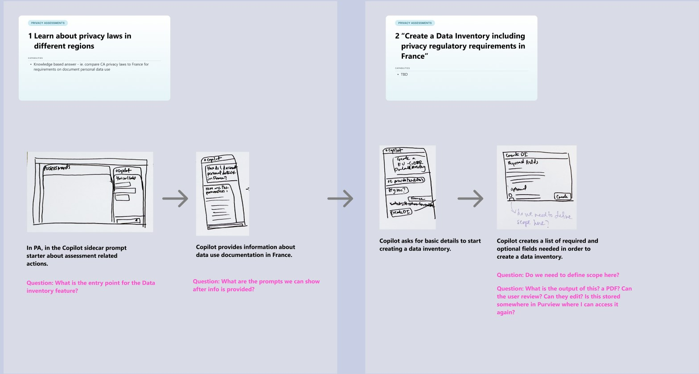
An early sketch of the same underlying pattern — Copilot answering a regulatory question, then walking the user toward a concrete next action. The pink annotations are open questions the team was still working through at the time, not settled answers.
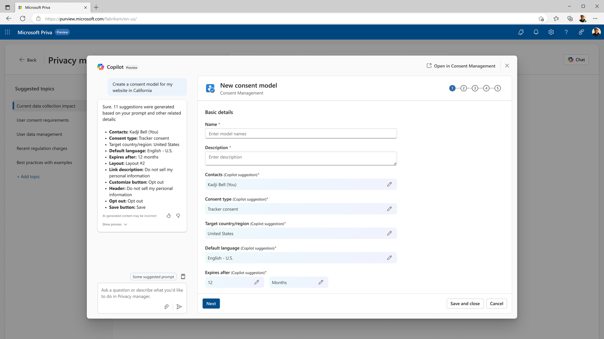
The shipped result — the same underlying idea, now a working wizard with 11 Copilot-suggested fields, each editable before the user saves.
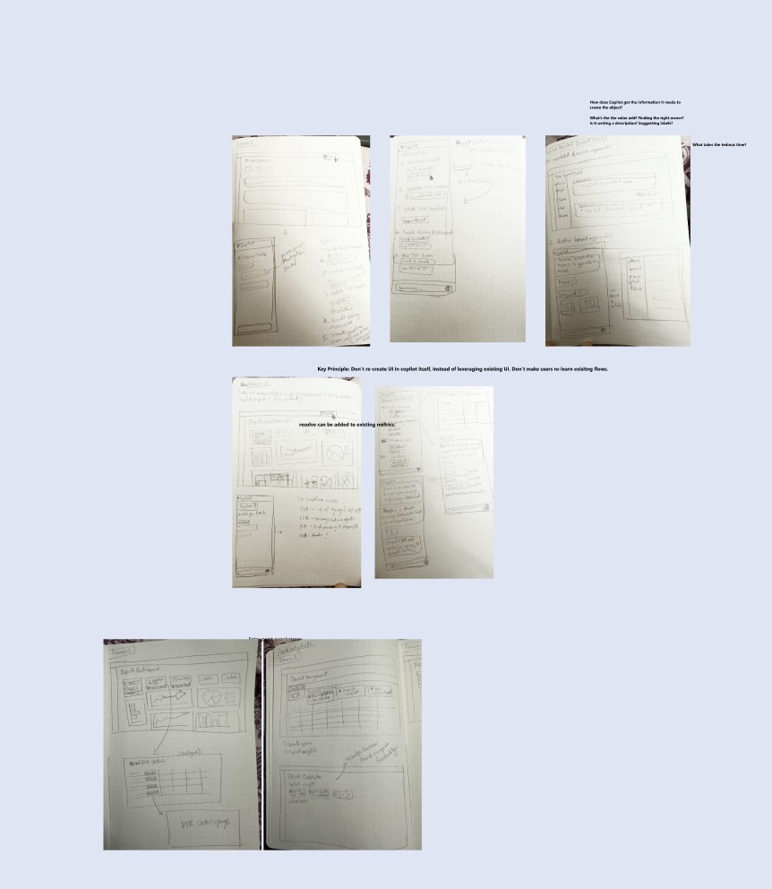
The stated principle, in its original handwriting — reused existing product UI rather than reinventing it inside the chat surface, so Copilot extended familiar flows instead of replacing them.
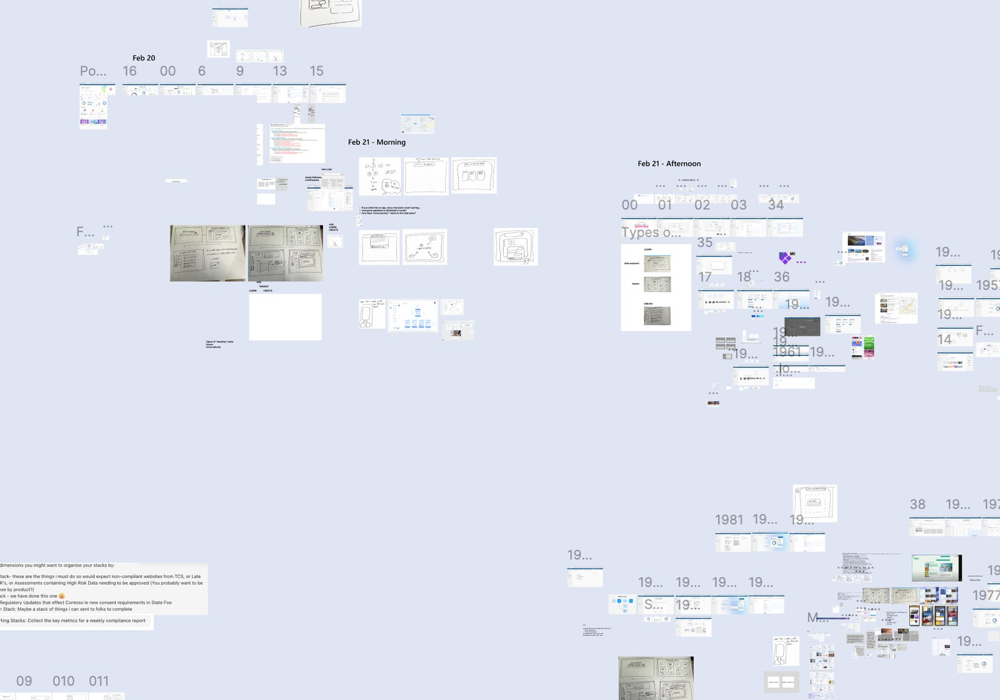
A bird's-eye view of the exploration board — dated, dense, and iterated on daily. Most of what's on this board didn't ship; that volume of discarded work is part of how the final patterns got settled.
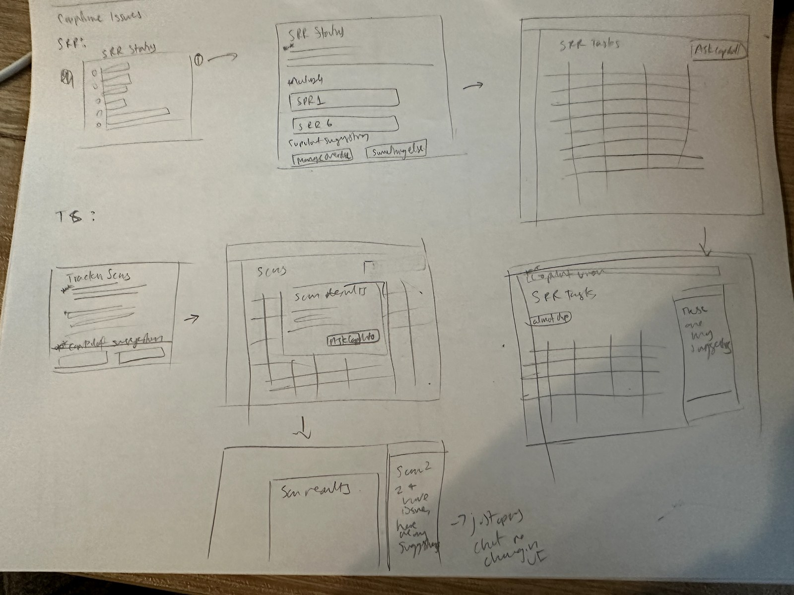
An early sketch of Magic Spotlight's scope — applied here to SRR tasks and tracker scan results, not just charts. This broad application is close to what actually shipped.
One alternate direction for the home experience — a conversation-history-first layout, with an expandable status stepper for tracking a multi-step AI-assisted task.
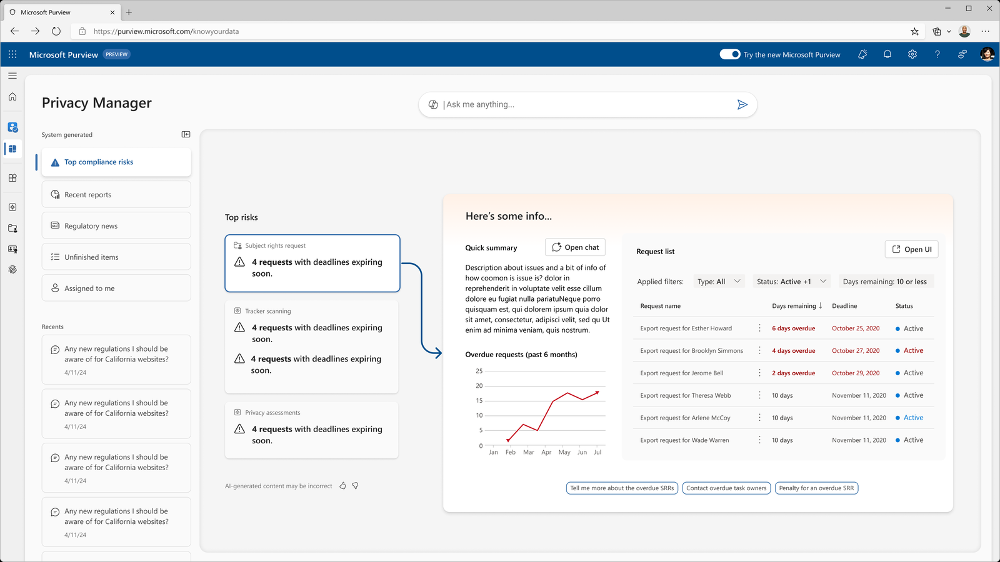
A second alternate direction, from before the Priva rebrand — a sidebar of system-generated views alongside an inline AI summary panel.
The shipped Magic Spotlight pattern — once a user's Privacy Manager home fills in with their history, a Copilot icon sits directly on each card (Tracker, Subject Rights Requests, Privacy Risk Assessment), not just on charts.
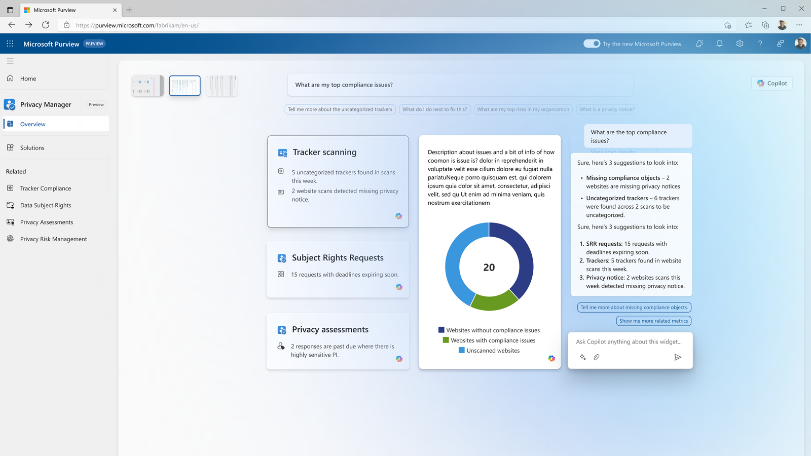
A deeper interaction explored and not shipped — expanding a card directly into an embedded chat panel. Set aside for accessibility and technical feasibility reasons in favor of the simpler icon-triggered pattern above.
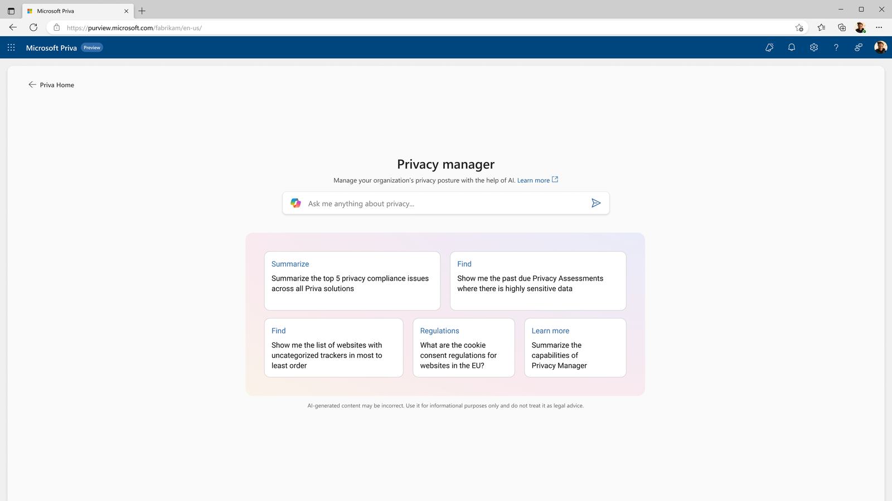
The entry point — an open prompt plus suggested starting points, so the assistant is useful whether a user knows exactly what they need or not.
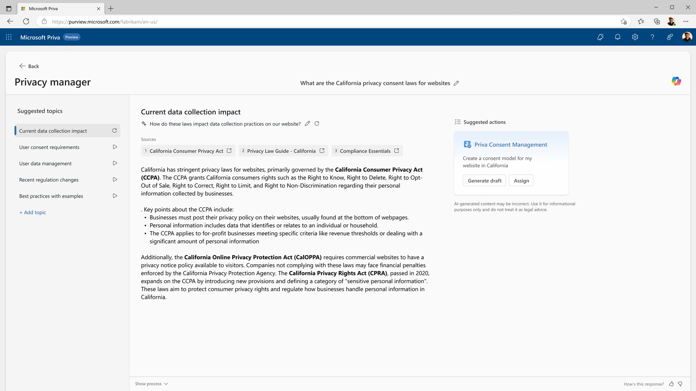
Attribution in practice — every regulatory claim traces to a numbered source, and the response ends in a concrete suggested action rather than just information.
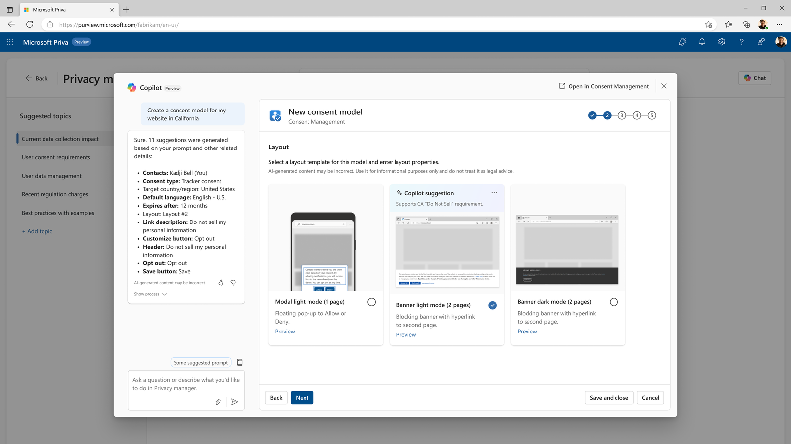
Copilot's recommendation shown with its reasoning attached, not just a pre-selected default — the "why" stays visible at the point of decision.
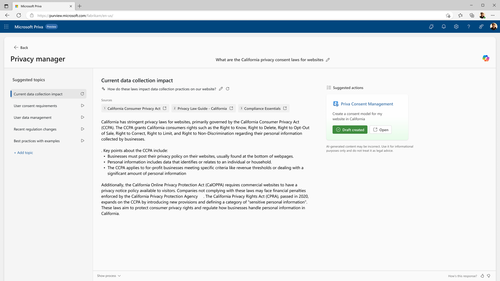
The handoff back to native product UI — Copilot's job ends at a review-ready draft, not a black-box action taken on the user's behalf.
IAPP Global Summit 2024
The prototype was demoed live at the IAPP Global Summit on April 3, 2024 — one of the most prestigious privacy industry conferences globally. The demo followed a live scenario: a company expanding to new markets, using Privacy Manager Copilot to navigate consent compliance in California. The system answered regulatory questions with sourced citations, generated a draft consent model in seconds, surfaced overdue DSRs, and auto-drafted a follow-up email to task owners.
Response from privacy professionals in the audience was strongly positive — generative AI applied specifically to privacy compliance was still uncommon to see live at that point, and the demo landed as a credible, production-ready vision rather than a research concept. Multiple customers signalled intent to adopt when the features reached general availability.
Outcome
The Privacy Manager Copilot prototype became an internal blueprint: engineering teams began aligning AI infrastructure (LLMs connected to privacy knowledge bases) to eventually realise the designed experience. Interaction patterns from this project — particularly the trust model and the smart wizard flow — closely resemble what shipped later in Microsoft's broader Security Copilot roadmap. By late 2025, Security Copilot features for Purview were announced, several echoing what was prototyped here.